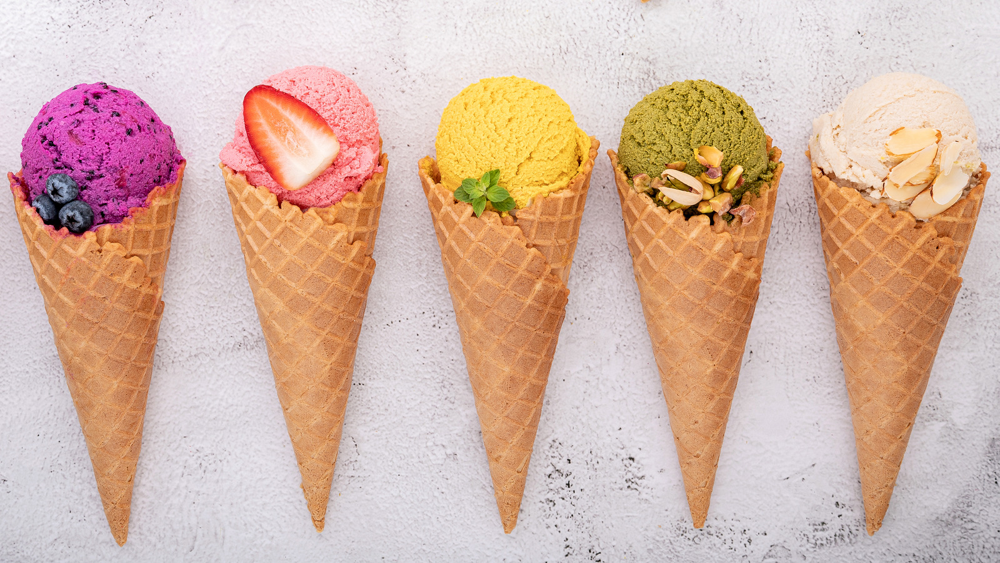

My love for icecream

I love ice cream and dare I say it is the best dessert. How can you beat a cold creamy yummy treat-- a bunch of flavors and best texture. Everyone knows you have an extra stomach specifically built for it-- you can not tell me it is not the best treat. its like happiness in a cup or a cone.
I have 2 go to icecreams- all time fav: mint chocolate chip from specifically bryers. Coming in a close second will be the mudslide from tillamook. Back when I was living in provo my go to was to alwasy go to the byu creamery and the roasted almond fudge had my heart and also the blue goggles- dudeee that one is fire its mint chocolate chip + chocolate covered honeycomb + cookiedough -- sounds fire I know